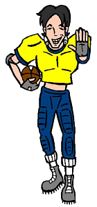

Characters
Characters
|
Kevin |
|---|
|

Full Name: Kevin Thompson Current Age: 18 Current Vocation: Senior at Lawndale High (held back) Season One Age: 16 Season One Vocation: Sophomore at Lawndale High Parents: Doug and Charlene Thompson First Appearance: Esteemsters
What goes well with an airhead cheerleader? A dumb jock, of course! Kevin is the quarterback of the Lawndale High varsity football team, and has apparently been through one too many practices without his helmet. He has no brains and no clue, which makes him the perfect match for Brittany. He is almost never out of his football uniform, probably because he'd be hopelessly confused about what else to wear. Daria tolerates him as best she can, though his I.Q. no doubt reminds her of her former nemeses, Beavis and Butt-head (and who would want to live through that again?). |
|
Voice:
Kevin's voice is performed by Marc Thompson, who also does the voices of Upchuck, Jamie, Mr. O'Neill, and Mr. DeMartino. |
|
Trivia |
|